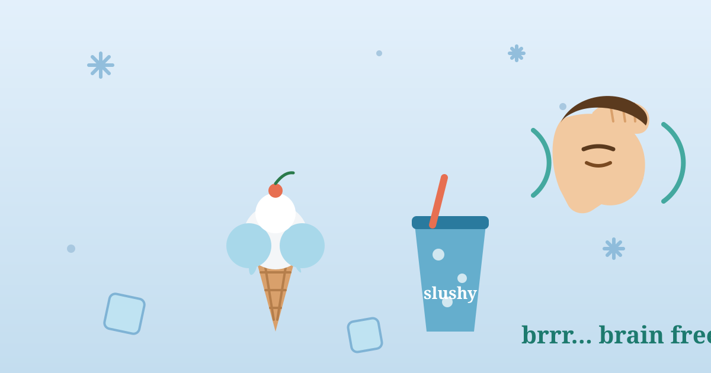

Why Do We Get Brain Freeze?

It happens in seconds. You take a big gulp of an ice-cold drink or a spoonful of ice cream on a hot day, and suddenly a sharp ache stabs the front of your head. You press your hands to your forehead, wait a few miserable seconds, and then it fades as quickly as it arrived — leaving you wondering why something so cold in your mouth hurt your head.
The short answer is that a brain freeze is your brain trying to protect itself. The cold chills the blood vessels at the back of your throat so fast that the brain panics about losing heat, slams those vessels shut, then throws them open again — and the sudden swing is what you feel as pain. Your brain itself never gets cold. The ache is a false alarm, but a useful one.
What a Brain Freeze Actually Is
The proper name is sphenopalatine ganglion neuralgia, which is a long way of saying "a pain signal from a bundle of nerves behind the nose". The sphenopalatine ganglion is a cluster of nerves sitting deep behind your nose, close to the back of your throat. It is wired into the blood vessels that feed the brain, and its job is to help control them.
When you eat or drink something very cold, the cold hits the back of your throat first — the roof of your mouth and the walls of your throat are thin, and a major artery runs right behind them. The cold cools the blood in that artery, and the nerves report the sudden drop in temperature to the brain.
The brain is the most temperature-sensitive organ you have, and it treats a sudden chill as an emergency. Its response is to protect its own blood supply, and it does that in two fast moves: first it squeezes the blood vessels shut to keep warm blood in and cold blood out, then, a moment later, it opens them wide again to restore the flow. It is that rapid squeeze and release that triggers the pain.
Why the Pain Lands in Your Forehead
The strangest part of a brain freeze is the location. The cold is in your throat, but the pain is in your forehead — usually right behind the eyes or across the front of the head. This is a case of referred pain: the brain misreads where a signal is coming from.
The nerves at the back of your throat and the nerves in your forehead share a pathway into the brain. When the ganglion fires its alarm, the brain cannot tell exactly which branch of the nerve network sent it, so it assigns the pain to the forehead — the same area where headaches usually live. The wiring is shared, and the brain guesses the location, sometimes wrongly, just as a heart problem can ache in the left arm.
The Squeeze and the Flood, Step by Step
Here is the sequence, which takes only a few seconds from first sip to full ache. First, the cold food or drink touches the back of your throat and rapidly cools the blood in the capillaries and the artery behind it. The temperature drop is detected by the sphenopalatine ganglion.
Next, the brain orders the blood vessels to constrict — to narrow sharply — so that less cold blood reaches it. It works, but it also cuts the blood supply, and the brain notices the loss of flow almost immediately.
So the brain reverses the order: it dilates the vessels, opening them wide to flood the area with warm blood again. The vessels swell quickly, and the pressure change irritates the pain receptors around them. That swelling is what you feel as the sharp, stabbing ache in your forehead.
Finally, once the temperature stabilises, the vessels settle back to normal, the pain receptors quiet down, and the ache disappears — usually within ten to thirty seconds. The whole event is your brain overcorrecting twice in a row.
Why Some People Get Them More Than Others
Almost anyone can get a brain freeze, but some people get them easily and others hardly ever. Speed is the biggest factor: the faster you eat or drink something cold, the sharper the temperature drop, and the more dramatic the brain's reaction. Eating ice cream slowly, in small bites, often avoids it entirely.
People who suffer from migraines tend to get brain freezes more often and more painfully. Researchers think the two share some of the same nerve pathways — the blood vessels in the brain of a migraine sufferer are more reactive, so they overreact to the cold in the same way they overreact to other triggers.
Children also seem to get them more easily, and on a very hot day, when your throat and mouth are warm, the contrast with an ice-cold drink is bigger, so the temperature drop is steeper and the freeze hits harder.
How to Stop a Brain Freeze
Because the cause is cold blood at the back of the throat, the cure is warming that spot back up. The classic trick works: press your warm tongue flat against the roof of your mouth. The tongue is full of warm blood, and it heats the chilled area directly, telling the brain the emergency is over.
Covering your mouth and nose with your warm hands and breathing warm air in has the same effect. So does drinking something warm, which heats the throat from the inside.
What does not help is ignoring it and taking another big gulp — that only cools the area further and starts the whole squeeze-and-flood cycle again. Slow down, take smaller sips, and let the cold food warm slightly in your mouth before you swallow it. Prevention is simply a matter of pace.
Common Mistakes
The most common mistake is thinking a brain freeze means your brain is freezing. It is not. Your brain is buried deep inside your skull, wrapped in warm blood, and a cold drink cannot chill it. The temperature change is small and local — in the blood vessels of your throat — and the brain never actually gets cold.
Another mistake is assuming a brain freeze is dangerous. It is not. It is uncomfortable, and it can be surprisingly painful for a few seconds, but it does no damage. The blood vessels return to normal, the pain stops, and there is no lasting effect. It is a false alarm from a system that would rather overreact than let the brain cool down.
Finally, do not confuse a brain freeze with a headache from cold air. A freezing wind on your face can trigger a different ache, and a migraine can be set off by many things, including cold drinks. But if head pain after something cold is severe or lasts much longer than a minute, it is worth mentioning to a doctor — an ordinary brain freeze that fades in seconds is nothing to worry about.
Frequently Asked Questions
Can a brain freeze hurt your brain?
No. The pain is real, but the brain itself is never in danger. The ache comes from blood vessels at the back of the throat swelling and shrinking quickly — the brain stays warm and safe the whole time.
Why does pressing my tongue to the roof of my mouth help?
Your tongue is warm and full of blood, and the roof of your mouth sits right above the chilled area. Pressing it there warms the blood vessels back up, which tells the brain the cold emergency is over and stops the pain signal.
Why do I get brain freeze from ice cream but not from cold water?
It is about speed and temperature. Cold water can cause a brain freeze too, if you gulp it fast enough. Ice cream is usually eaten in big spoonfuls that sit against the back of the throat, so it cools the area faster than a slow sip of cold water does.
Do animals get brain freeze?
Probably. Dogs have been seen flinching and pawing at their heads after ice-cold treats, which looks very much like a brain freeze. The reflex is likely common in mammals, because protecting the brain from sudden cold is useful for all of them.
Conclusion
A brain freeze is not your brain freezing — it is your brain defending itself. Cold food chills the blood vessels at the back of your throat, the brain slams them shut to keep the cold out, then throws them open again to restore the flow, and the rapid swing sets off a pain signal that lands, by a quirk of shared wiring, in your forehead. It lasts seconds, it does no harm, and it is over as soon as the area warms up again. So eat the ice cream — just a little more slowly.